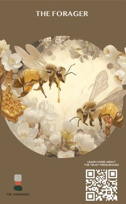
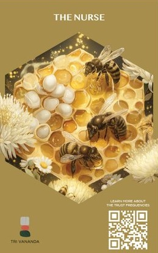
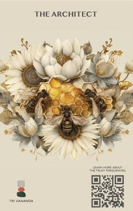
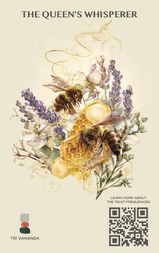
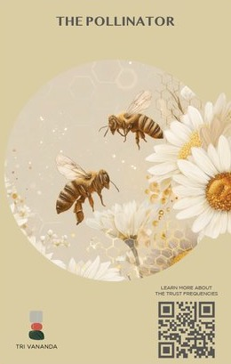
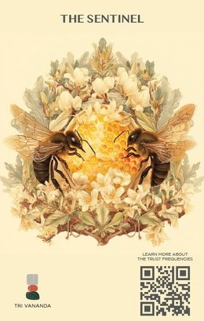
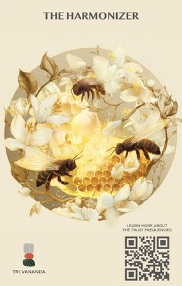

Tri Vananda is a well-living community taking shape on 230 acres in Phuket, Thailand — 85% of the land preserved as forest, wetlands and lakes.
Dragonfly is Asia's leading leadership summit. Tri Vananda joined it to champion a shared belief: that conscious leadership and meaningful growth begin with how well — and how connected — we live.
Trust is the foundation of Tri Vananda — and of every healthy team, family and community. Yet at leadership summits it stays a word on a slide. So we turned to the beehive: a hive thrives not because its bees are the same, but because seven different roles find rhythm together. From that truth came seven Trust Frequencies — the distinct way each of us gives and earns trust.
Harmony is trust in motion.







Eight hexagon rooms, built like cells of a hive. Guests entered with an empty basket and moved room to room — playing, choosing, collecting tokens. No right answers, no score. At the end, the tokens poured into bowls and an archetype appeared: recognition, not judgment.
Knowledge that passes person to person —
the way trust itself does.
When trust flows,
our impact amplifies.